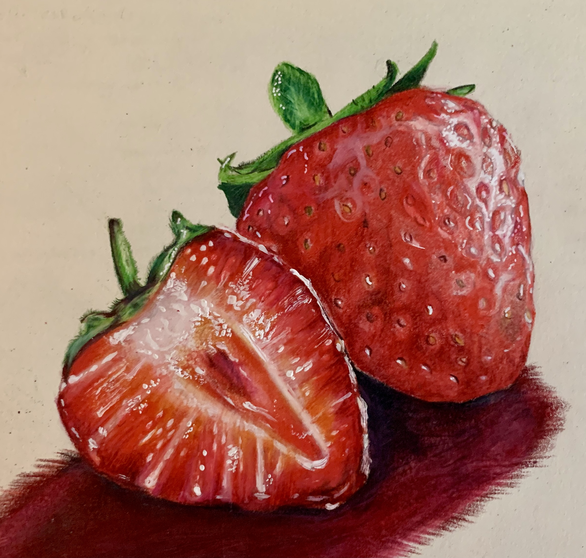
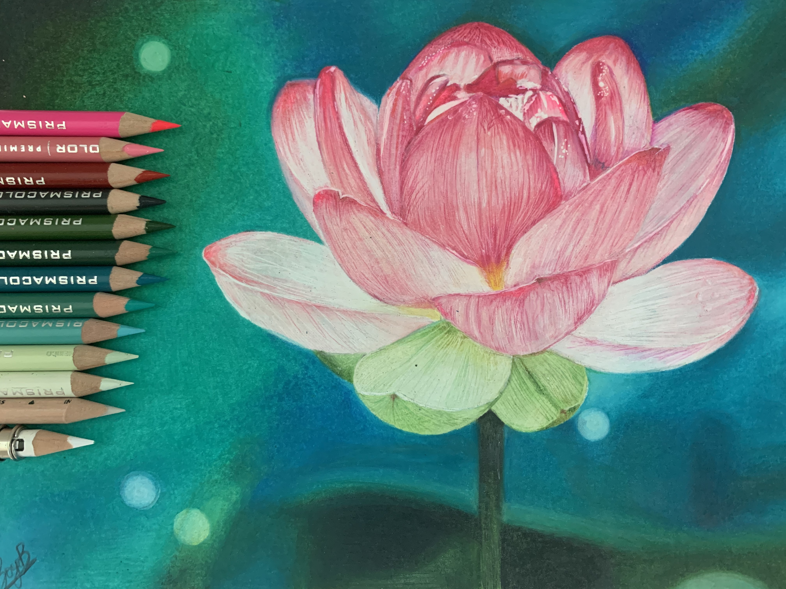

Hello! My name is Zoya, and I am a junior at the Early College at Guilford. I am a passionate artist and graphic designer, and I am also developing my skills in computer science. Currently, my interests lie in marketing and graphic design, and over the years I have been deepening my understanding of coding and I am working to integrate it with my skills in art and design. As I continue to advance my skills, I created this site to track my progress and expand my reach within my community.This site features my artwork (both traditional and digital), and my coding projects. I hope you enjoy my portfolio!

From a very young age, I've always had a love for art. I'm mostly self-taught, but I have taken some fine arts classes to develop my skill in mediums like charcoal, pastels, watercolors, and even oils. My main focus is in portraiture and photorealism with pencil drawings, but my styles range from drawings to paintings as well. I also do a lot of digital work using Adobe Photoshop and Procreate to create graphics on larger scales.
 Since 9th grade, I've been learning how to program robots using Java. Doing this has allowed me to branch out and mentor others in programming, and participate in lots of tech workshops where I helped teach middle-school girls about the importance of STEM and robotics as a whole. I also have some background in Python from those tech workshops as well as some projects I created from a Scientific Computing course. Finally, I am currently developing my skills in HTML, CSS, and Javascript.